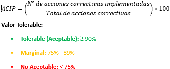

|
PSC 003| Mejora
|
Ver. 000
|
|
|
Creado por EGC | Aprobado por CEO
|
Fecha: 01.12.2024
|
Contenido
1.- Objetivo del Proceso................................................................................................................................................
2.- Alcance del Proceso................................................................................................................................................
3.- Matriz del Proceso...................................................................................................................................................
3.- Recursos del proceso..............................................................................................................................................
3.1.- Recursos.............................................................................................................................................................
3.2.- Responsables......................................................................................................................................................
4.- Seguimiento...........................................................................................................................................................
4.1 Metodología...........................................................................................................................................................
4.2.- Indicadores..........................................................................................................................................................
5.- Análisis y evaluación de riesgos del proceso.............................................................................................................
6.- Análisis y evaluación de oportunidades del proceso...................................................................................................
8.- Historial de Versiones.............................................................................................................................................
1.-
Objetivo del Proceso
Implementar un enfoque sistemático para la mejora continua en los
procesos, productos y servicios de la organización, asegurando
la optimización de actividades y el cumplimiento de los objetivos
estratégicos.
2.-
Alcance del Proceso
El proceso incluye la identificación, análisis y ejecución
de oportunidades de mejora en todas las áreas de la organización,
basándose en resultados de auditorías, indicadores de desempeño
y retroalimentación de clientes.
3.- Matriz del Proceso
| ENTRADAS | PROCEDIMIENTOS (actividades) | SALIDAS |
| Resultados de auditorías internas y externas. | Análisis de hallazgos y establecimiento de acciones correctivas y preventivas. | Plan de acciones correctivas. |
| Reclamos y sugerencias de clientes. | Identificación y evaluación de causas raíz de los reclamos recibidos. | Registro de acciones implementadas. |
| Indicadores de desempeño de procesos. | Revisión de indicadores clave y propuesta de mejoras basadas en tendencias. | Informe de tendencias y mejoras. |
| Información sobre riesgos y oportunidades. | Evaluación y priorización de riesgos y oportunidades. | Plan de mejora continua. |
| Revisiones de la Alta Dirección. | Implementación de decisiones estratégicas basadas en resultados analizados. | Actas de revisión actualizadas. |
3.-
Recursos del proceso
3.1.- Recursos
Para este proceso de Mejora se requieren:
- Humanos: Responsables de calidad, auditores internos y líderes de procesos.
- Financieros: Presupuesto para implementar acciones correctivas y preventivas.
- Tecnológicos: Herramientas para análisis de datos y monitoreo de indicadores.
- Información:
Informes de auditorías, datos históricos de desempeño
y registros de retroalimentación..
3.2.- Responsables - Responsable del SGC
- Líderes de áreas operativas
- Equipo de auditoría
interna.
4.- Seguimiento
4.1 Metodología
El seguimiento del proceso de Mejora se realiza mediante:
- Monitoreo de la implementación de planes de mejora.
- Revisión periódica de indicadores clave de desempeño.
- Evaluación de la efectividad de acciones correctivas y preventivas.
- Identificación
de nuevas oportunidades de mejora basadas en resultados.
4.2.- Indicadores
Í% de acciones correctivas implementadas en plazo.
(Mide el desempeño del Proceso 003)

Justificación:
Un nivel de cumplimiento superior al 90% indica un compromiso efectivo
con la mejora continua. Un cumplimiento entre 75% y 89% sugiere áreas
de mejora. Un cumplimiento inferior al 75% requiere revisión de
estrategias y recursos.
Fuente de Datos: Informes de auditoría, actas de revisión,
registros de acciones correctivas.
Frecuencia de Evaluación: Trimestral, en reuniones de seguimiento
del SGC.
Plan de Acción: Si el indicador está en rango no aceptable
(<75%), la Alta Dirección debe revisar recursos y tomar acciones
correctivas.
5.-
Análisis y evaluación de riesgos del proceso
La evaluación de riesgos en el proceso de Mejora incluye:
- Resistencia al Cambio: Falta de compromiso del personal para implementar mejoras.
- Recursos Insuficientes: Limitaciones para ejecutar acciones correctivas y preventivas.
- Fallas en la Comunicación:
Retrasos en la difusión de planes de mejora.
6.- Análisis y evaluación de oportunidades del proceso
- Digitalización de Procesos: Uso de software para rastrear y gestionar acciones de mejora.
- Capacitación en Gestión de Cambios: Formación del personal para facilitar la implementación de mejoras.
- Automatización de Indicadores: Uso de herramientas para monitorear tendencias en tiempo real.
- Benchmarking: Comparación
con organizaciones líderes del sector para identificar mejores
prácticas..
7.- Documentación de Referencia
- Informes de auditorías internas y externas.
- Planes de acción correctiva y preventiva.
- Registros de indicadores de desempeño.
- Programas de retroalimentación de clientes.
| Versión | Fecha | Asiento | Aprueba |
| 000 | 01.12.2025 | Original | CEO |